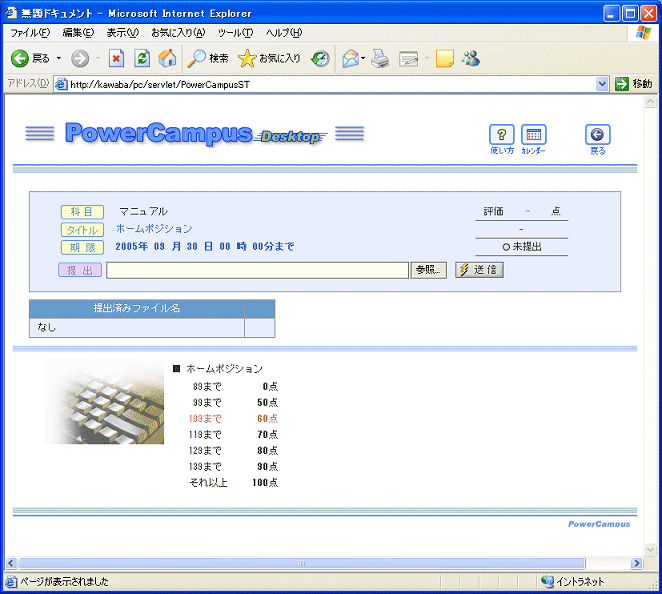

|
評価点の水準は一般的と思われる程度で設定してありますが、適当に書き換えても構いません。EPMLの指定を崩さなければ、これ以外に文章や図を加えて構いません。
なお ##p3 imgbox=&kb.jpg, left, 0 という段落指定は、kb.jpg という写真(システムが最初から持っている図版ですから&がついています)を段落の左に表示し、文字は右側に表示することを意味しています。p3は段落書式で、標準では indent=40 size=12px flow=640 height=130 と同義です。ここで、indentは左端余白、sizeは文字の大きさ、flowは１行の幅、heightは行間(%指定)です。
特に付け加えない場合、学生に表示される画面は以下のようになります。
この画面で、学生が mikatype.sei ファイルをアップロードすると、採点結果とランキング表が表示されます。

|
|

 課題作成エディタをひらきます
課題作成エディタをひらきます
 課題名を入力し、右下の「タイピング・タイプ試験」ドロップダウンリストから
課題名を入力し、右下の「タイピング・タイプ試験」ドロップダウンリストから
 課題の種別と問題を表現するEPML文が自動的に入力されます。
課題の種別と問題を表現するEPML文が自動的に入力されます。